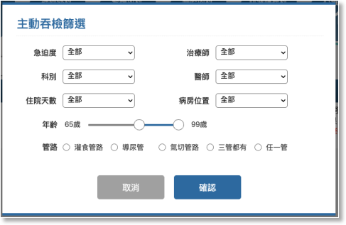

01-3-1 主動吞檢初選篩選

項目
內容
說明
急迫/嚴重度
下拉選項預設為全部
下拉選項
- 全部
- 紅燈
- 黃燈
- 綠燈
- 灰燈
治療師
下拉選項預設為全部
下拉選項
- 全部
- 所有語言治療師姓名
- 未指定
科別
下拉選項預設為全部
對應”05-3 特約科別及醫師”所有特約醫師的科別
下拉選項
- 全部
- 神經內科
- 神經外科
- 腎臟內科
- 胸腔內科
- 安寧緩和
- 血液腫瘤科
- 心臟外科
- 心臟內科
醫師
下拉選項預設為全部
對應”05-3 特約科別及醫師”所有特約醫師
下拉式選項：
- 全部
- 0124 莊永鑣
- 0127 李坤峰
- 0128 何承恩
- 0112 林純全
- 0113 孫宏傑
- 0104 許智凱
- 0111 林斈府
- 0129 卓俊宏
- 0115 張書軒
- 0122 陳翰興
- 0230 黃振銘
- 0202 王冠權
- 0224 吳鏘亮
- 0225 廖正智
住院天數
下拉選項預設為全部
下拉選項
- 全部
- 1～7
- 8～14
- 15～30
- 31～90
- 91～180
- 181～360
- 360以上
病房位置
下拉選項預設為全部
下拉選項
- 全部
- 院內護理站代號，例如5A、5B
年齡
雙節點滑桿元件
RangeSlider
左右點的控制連動年齡起迄的數字，預設0～125
管路
單選項預設以上三管都有
radio button
1. 管路項目：
- 灌食管路
- 導尿路
- 氣切管路
- 以上三管都有
- 任一管
2. 管路分類：
- 灌食管路:
- NG-Rubber(鼻胃管)
- Gastrostomy tube (胃造口管)
- Jejunostomy tube (空腸造口管)
- ND (鼻、十二指腸導管)
- 導尿管:
- Foley-Rubber (導尿管)
- Cystofix(膀胱造口管)
- 氣切管路:
- Tracheostomy(氣管造口器)
- Endotracheal (氣管內管)
